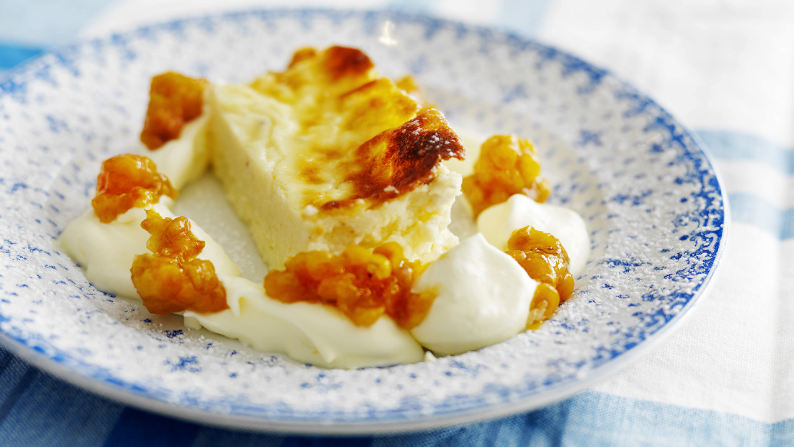

Enkel ostkaka
Ingredienser
- 4 Ägg
- 2 msk Strösocker
- ½ dl Vetemjöl
- 500 g Cottage cheese
- 3 dl Vispgrädde
- 1 dl Hackad sötmandel
- 2 Hackade bittermandlar
- 2 dl Hjortronsylt
- 2 dl Vispgrädde
Gör så här
- Sätt ugnen på 175° eller 160° varmluft.
- Smörj en ugnssäker form, ca 20x30 cm.
- Vispa ihop ägg och socker. Tillsätt vetemjöl, cottage cheese, grädde och mandel. Blanda väl.
- Häll smeten i formen och grädda i mitten av ugnen ca 35 min.
- Servera ljummen ostkaka med hjortronsylt och lättvispad grädde.